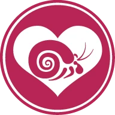
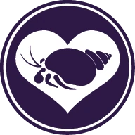

Krabz!
About us

Friendship
Every pet you can have in mind, can be a friend of some kind!
Quality
We're confident in the reliablility and durablility of our unique products!
Sustainability
Everything we do is sustainable to protect wildlife and our planet.

Care
Krabooz are exotic pets with very specific care. We are here to guide you!